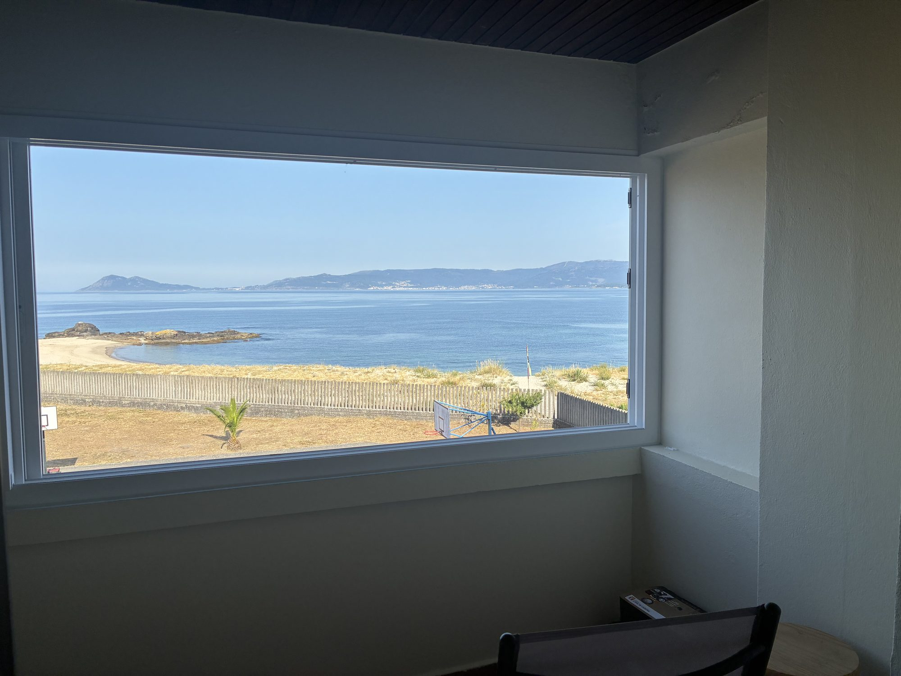

Por descubrir
Qué visitar cerca
Distancias desde el apartamento.

Portosín · Ría de Muros e Noia · Galicia
Frente a la playa de Goyanes,
con el Atlántico a un paso de la ventana.
Bienvenido a casa
El apartamento está justo enfrente de la playa de Portosín–Goyanes, más de 650 metros de arena que casi siempre tienes para ti.
Esperamos que encuentres todo lo que necesitas para una estancia de calma y desconexión. Cualquier cosa que surja, estamos a una llamada.
Natalia & Javier Tus anfitriones
El lugar
A medio camino entre Noia y Ribeira, en el arranque de las Rías Baixas: clima suave, tierra de Albariño y playas escondidas donde estar a solas incluso en pleno agosto.
Es un puerto pesquero de cerco y marisqueo, con uno de los mejores puertos deportivos de la ría —el Club Náutico de Portosín— y la playa de Coira en el centro del pueblo, rodeada de terrazas y restaurantes junto al muelle.
A la mesa
Para una ocasión
Merece la pena reservar antes de ir.
Por descubrir
Distancias desde el apartamento.
Al aire libre
Rutas por la costa y los miradores de la ría de Muros e Noia.
Si nos necesitas